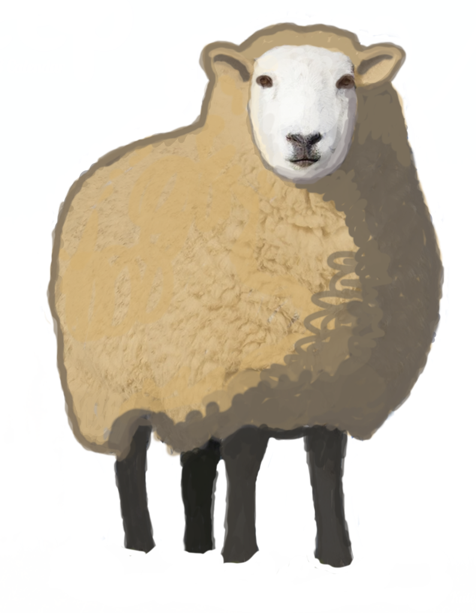

takes your data and draws a tree of a knockout tournament
manage options
Some heading
import { createPlayoffs } from 'playoffs'
const wrapper = document.querySelector('#your-wrapper-element')
const data = { ... } // data of specific shape
const options = {
}
createPlayoffs(data, wrapper, options)
# Highlight contestants's matches
## on click
When you click on a side of match, by default it will "highlight" all matches where such contestant was a side.
"Highlighted" means that connection lines of such a match attain a color of options.highlightedConnectionLinesColor (**** by default)
And player titles of a highlighted contesant will attain a color of ****
Matches will be unhighlighted if you click something other than match side.
Highlight on click will not work if options.onMatchClick or options.onMatchSideClick is provided
## highlightContestantHistory
You can do the same thing programmatically using highlightContestantHistory lifecycle method
Accepts one argument: **contestantId** which can be a string or null
When called with a valid contestantId (for which a side is found in data.matches), it will highlight such contestant's matches.
When called with null, it will unhighlight what was highlighted before
When called with something else, will do nothing
If called with a valid contestantId, it will highlight matches *even if options.onMatchClick or options.onMatchSideClick is provided*
## disableHighlight
Useful for instance if you want to make the player titles behave like links to players' profiles. (This can be achieved using getPlayerTitleElement option).
## highlightedConnectionLinesColor
## highlightedPlayerTitleColor
## connectionLinesWidth